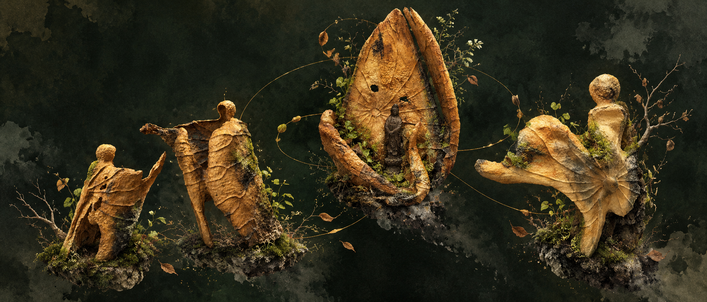

01

給正在找回自己的妳
有些答案，
要慢慢靠近。
不是預測未來。
是讀懂妳怎麼走到今天。
THE COMPASS · 01
命盤不是判決，
是一張可以對照生活的底圖。
八字、紫微斗數、西洋占星與人類圖，不替妳定義人生。浮生羅盤把四套系統放在一起，找出共同指向，也保留彼此不同的聲音。
「不是告訴妳會發生什麼，
而是陪妳看見：當事情發生時，妳總是怎麼回應。」
FOUR LANGUAGES · ONE LIFE
四種語言，
拼回一個完整的妳。
- 壹八字
看生命能量如何流動，妳慣常怎麼使力。
- 貳紫微斗數
看角色與人生場景，妳在哪裡容易重複。
- 參西洋占星
看內在需求與張力，理解矛盾從何而來。
- 肆人類圖
看決策方式與能量邊界，練習適合妳的選擇。
先不用相信。
把報告帶回妳的生活驗證。
TWO WAYS OF READING · 02
同一張人生底圖，
兩種靠近自己的方式。
先理解妳怎麼走到今天，再看下一次可以怎麼不同。兩份報告不是深淺之分，而是妳此刻需要的方向不同。
02
不知道選哪一版也沒關係。
先從免費的四盤總覽開始。
NOTES ON LIVING · 03